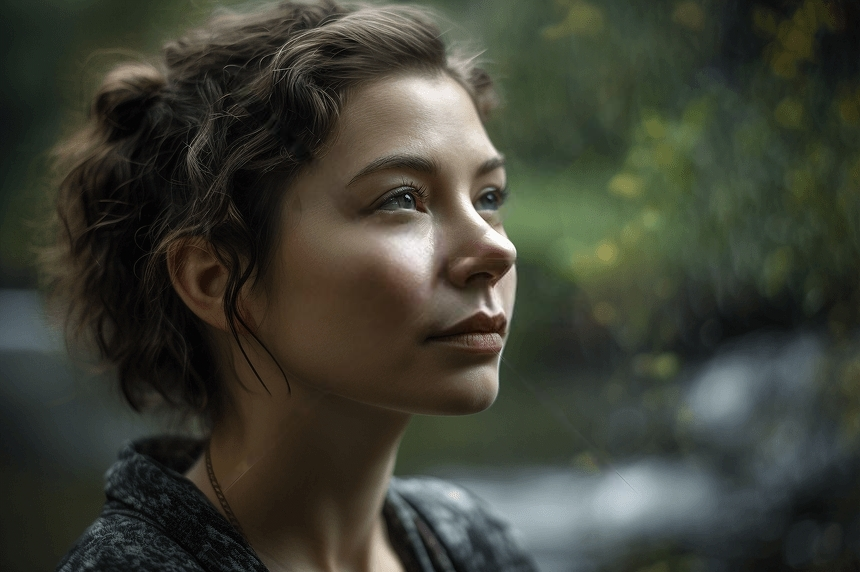
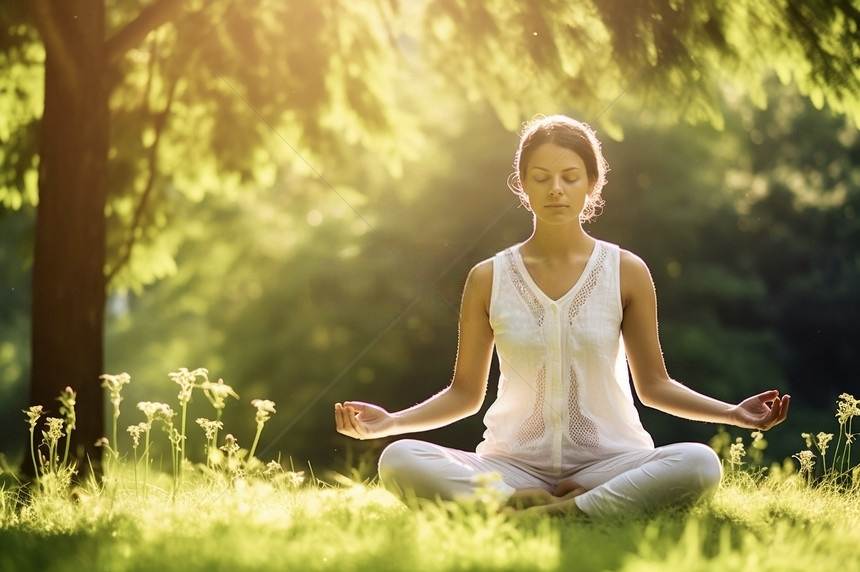
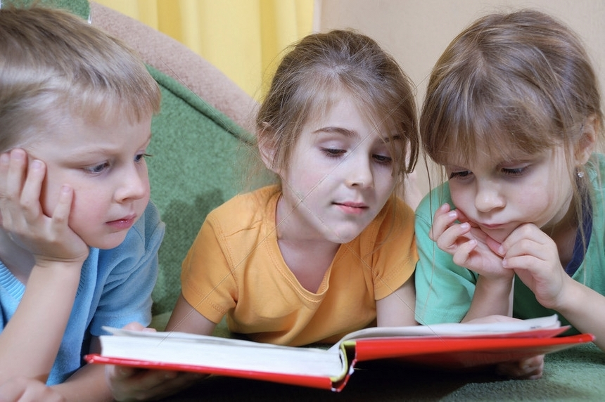
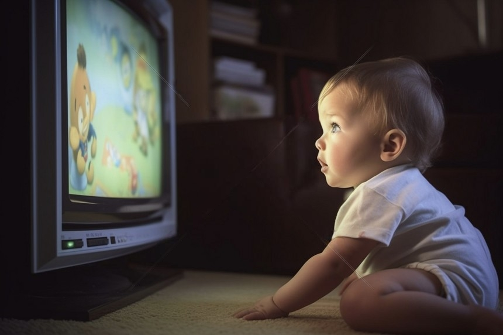
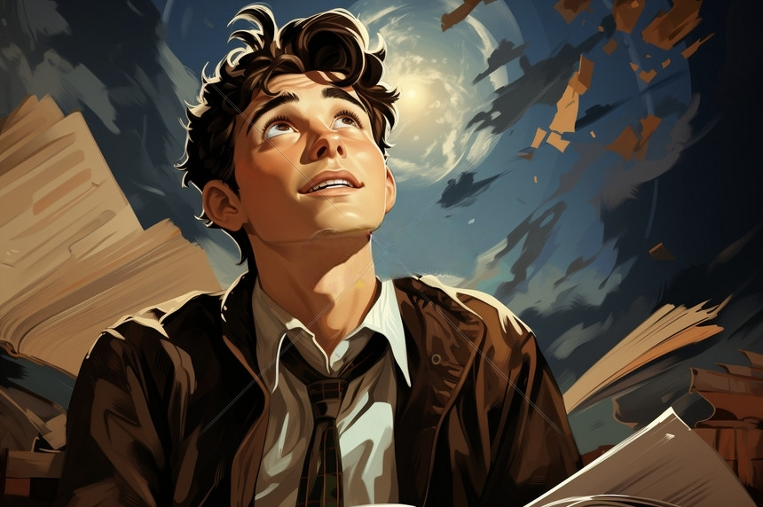

请睁开眼睛并保持静止，让视线停留在屏幕中央的加号。
整个实验将持续 2分钟，请保持放松但清醒的状态。
尽量减少眨眼和身体移动，以获得高质量的脑电数据。
请轻轻闭上眼睛，保持身体静止，让思维自然地流动。
整个实验将持续 2分钟，请保持放松但清醒的状态。
实验开始和结束时会有声音提示，请注意聆听。
尽量减少身体移动，以获得高质量的脑电数据。
实验开始时会播放一声高音提示，结束时播放一声低音提示。
您可以在实验开始前测试提示音效果。
请集中注意力，完成连续减法任务。
屏幕上将显示一个初始数字，您需要连续减去3，并将结果默算出来。
整个实验将持续 1分钟，请保持专注。
屏幕上将显示一个随机初始数字（100-200之间）。
您需要心算"当前数字 - 3"的结果。
屏幕上的数字会每隔2秒自动更新为减去3后的结果。
请持续进行这个心算过程，直到实验结束。
请观看视频片段，并运用情绪调节方法，保持对应的情绪状态。
整个实验将持续 70秒，包含4个trial。
请根据神经反馈进度条调节您的情绪状态。
即将播放高兴/平静情绪片段，请感受并保持高兴/平静情绪。
通过神经反馈进度条，您可以实时了解自己的情绪状态。
进度条偏向左侧表示平静，偏向右侧表示高兴。
请尝试通过情绪调节方法，使进度条保持在目标区域。
请运用情绪调节方法，想象情景，保持高兴或平静的情绪。
整个实验将持续 1分钟。
您可以选择有反馈或无反馈两种模式。
有反馈模式: 显示情绪神经反馈进度条，帮助您了解当前情绪状态。
无反馈模式: 不显示反馈信息，仅依靠自我感知调节情绪。
请在接下来的一分钟，感受并保持高兴/平静情绪。
想象让您感到愉悦或平静的场景，如美丽的海滩、宁静的森林或快乐的回忆。